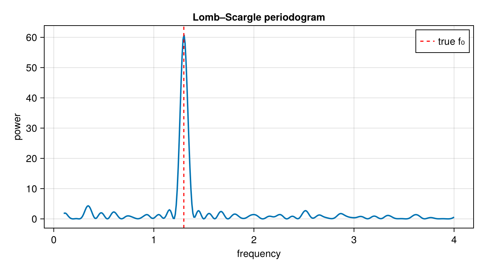
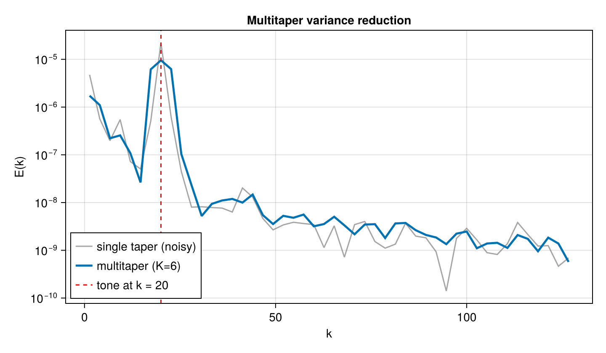

Irregular sampling & windowed estimation
Two estimators for data that an FFT can't handle directly: the Lomb–Scargle periodogram for irregularly-sampled series, and multitaper (DPSS / Slepian) averaging for low-variance spectra of short records.
Lomb–Scargle (irregular sampling)
Moorings, drifters, and satellite tracks sample at uneven times. lomb_scargle estimates the spectrum directly from (t, y) at a chosen set of (strictly positive) frequencies — no interpolation onto a regular grid.
using FlowFieldSpectra: FlowFieldSpectra as FFS
using CairoMakie: CairoMakie as Mke
import Random
Random.seed!(7)
N = 250
t = sort(rand(N) .* 10.0) # irregular sample times in [0, 10]
f0 = 1.3
y = @. sin(2π * f0 * t) + 0.3 * randn()
freqs = range(0.1, stop = 4.0, length = 400)
P = FFS.lomb_scargle(t, collect(y), collect(freqs))
fig = Mke.Figure(size = (680, 380))
ax = Mke.Axis(fig[1, 1]; title = "Lomb–Scargle periodogram", xlabel = "frequency", ylabel = "power")
Mke.lines!(ax, freqs, P; linewidth = 2)
Mke.vlines!(ax, [f0]; color = :red, linestyle = :dash, label = "true f₀")
Mke.axislegend(ax)
fig
The periodogram peaks at the true frequency f₀ = 1.3 despite the uneven sampling and noise.
Multitaper (DPSS) variance reduction
For a short, uniformly-sampled record, a single periodogram is noisy. The discrete prolate spheroidal sequences (dpss) form an orthogonal family of optimally band-limited tapers; averaging the spectra of the tapered signal yields a low-variance estimate. The taper spectra stack along the realization axis and reuse the Welch averaging path.
using FFTW: FFTW # activates the FFTBackend extension
Nx = 256
L = 2π
dx = L / Nx
x = range(0.0, stop = L - dx, length = Nx)
freq = [0:(Nx ÷ 2 - 1); -(Nx ÷ 2):-1]
bg = real(FFTW.ifft(FFTW.fft(randn(Nx)) .* [k == 0 ? 0.0 : abs(k)^(-1.0) for k in freq]))
k0 = 20
sig = @. 0.25 * cos(k0 * x) + bg # tone at k₀ on a k⁻² (red-noise) continuum
K = 6
V = FFS.dpss(Nx, 4.0, K) # N×K taper matrix (NW = 4)
grid = FFS.UniformCartesianGrid((collect(x),); domain_size = (L,))
C = zeros(ComplexF64, Nx, K)
for k in 1:K
c, ks1 = FFS.calculate_spectrum(FFS.FFTBackend(), grid, (V[:, k] .* sig,), (Nx,))
C[:, k] .= c[:, 1]
global ks = ks1
end
kb, Emt = FFS.welch_power_spectrum(ks, C; num_bins = 48)
# Compare against a single taper computed the same way, so only the variance differs (the tapers
# carry a normalization that a raw periodogram would not, which would offset the levels).
kb1, Esingle = FFS.welch_power_spectrum(ks, C[:, 1:1]; num_bins = 48)
fig = Mke.Figure(size = (720, 420))
ax = Mke.Axis(fig[1, 1]; title = "Multitaper variance reduction", xlabel = "k", ylabel = "E(k)",
yscale = log10)
Mke.lines!(ax, kb1, Esingle .+ 1e-12; label = "single taper (noisy)", color = (:gray, 0.7))
Mke.lines!(ax, kb, Emt .+ 1e-12; label = "multitaper (K=$K)", linewidth = 2.5)
Mke.vlines!(ax, [Float64(k0)]; color = :red, linestyle = :dash, label = "tone at k = $k0")
Mke.axislegend(ax; position = :lb)
fig
The multitaper estimate is markedly smoother than a single taper at the same level, while preserving the spectral peak at k₀ = 20.